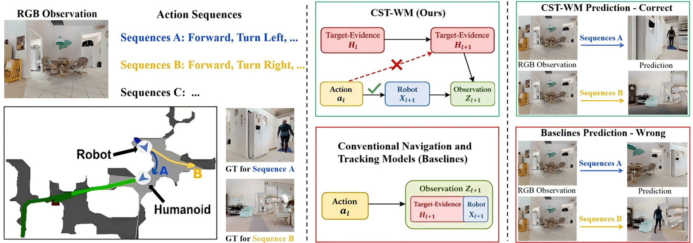
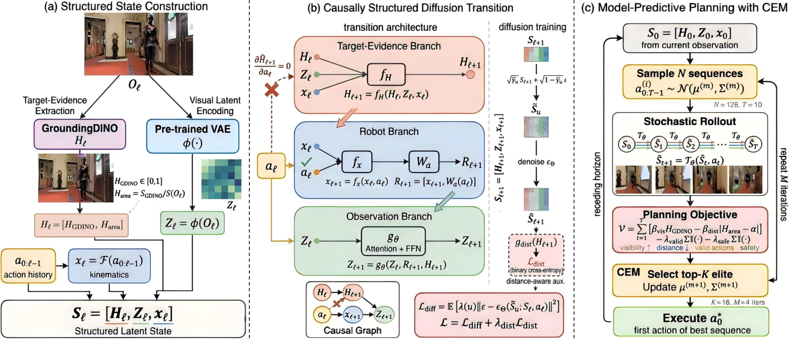
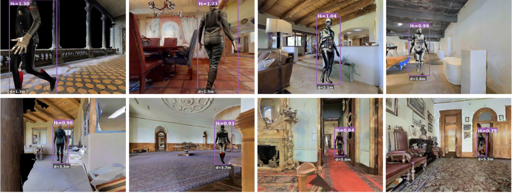
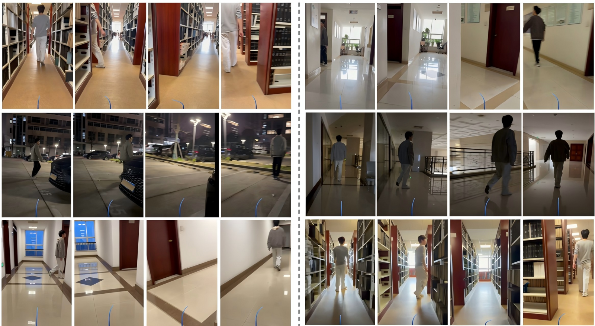
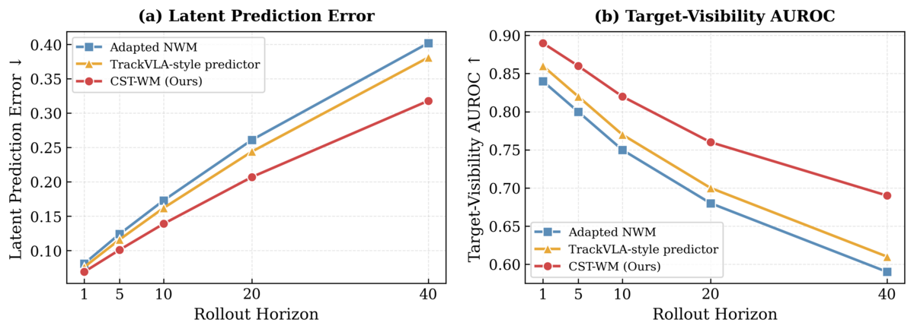
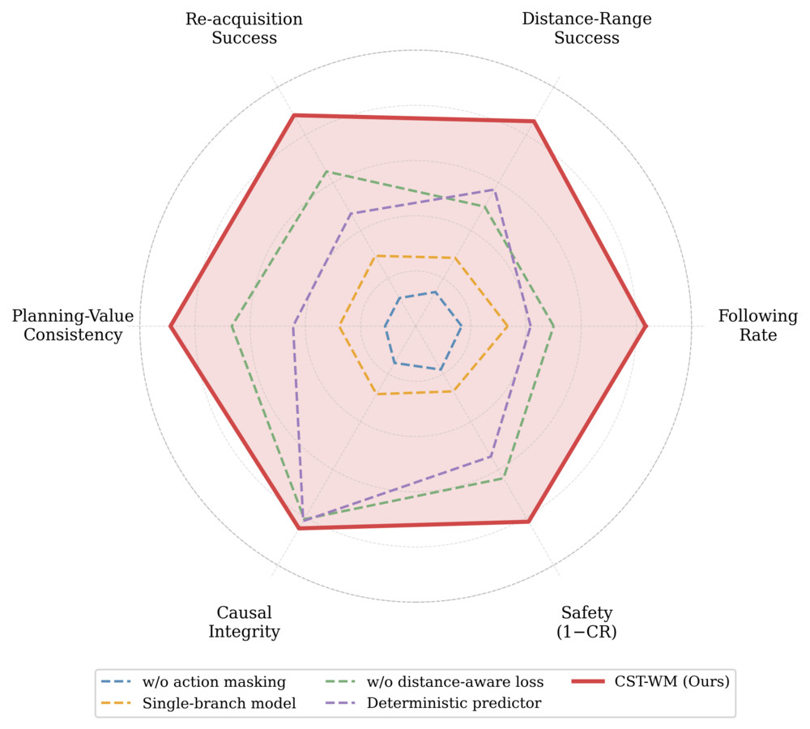
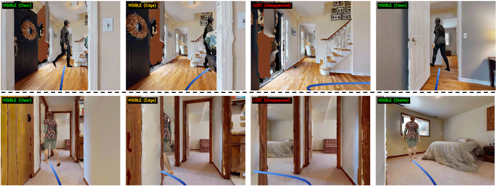
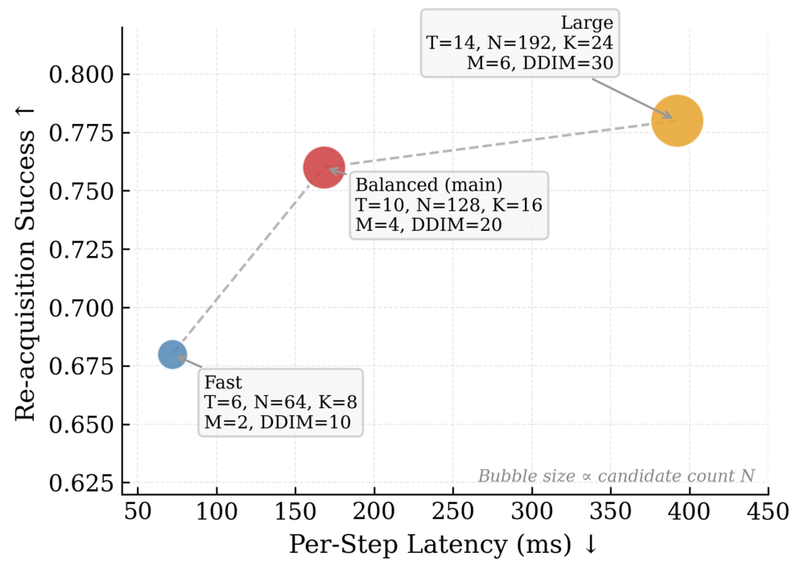

A Causally Structured World Model
for Embodied Visual Tracking
New York University Abu Dhabi
† corresponding author · jh10472@nyu.edu

H is updated without reading the action, which only reaches future
observations through the robot branch x. The resulting predictions distinguish the two
sequences and agree with the simulator.Embodied visual tracking requires a robot not only to react to the current view, but also to choose actions that preserve or recover future evidence of a moving target under ego-motion, occlusion, and distractors. This makes it a predictive decision problem over future target observability and apparent scale.
A central difficulty is a task-specific form of causal hallucination: in action-conditioned sequential prediction, a model can exploit the strong correlation between robot control and target-related observations by hallucinating a direct causal effect from the current action to target evidence, rather than allowing action to influence such evidence only through robot motion and the resulting observation change. This shortcut can yield plausible futures while giving the wrong semantics for tracking-oriented planning and target re-acquisition. We propose CST-WM, a causally structured world model that decomposes the latent state into a target-evidence branch, a robot branch, and an observation branch, and factorizes the transition so that direct action injection into the target-evidence branch is blocked while action remains available to robot motion and observation updates. Combined with rollout-based model-predictive control, CST-WM supports both stable following and temporary target re-acquisition within a unified planning framework.
For embodied visual tracking, future prediction alone is not enough — the predictive structure itself must align with how target evidence enters planning.
The hardest moments in following a person are not when the target is clearly visible. They are the moments when the target is occluded, drifts out of the field of view, or becomes confusable with a distractor — exactly when the robot must decide how to move before reliable evidence comes back. So the value of an action depends on how it changes future target visibility and apparent scale, not only on how it moves the robot.
That framing exposes a limitation on both sides of the usual split. Reactive trackers are myopic: once the target disappears, they offer little basis for choosing actions that support multi-step recovery. But a generic action-conditioned world model is not sufficient either. In embodied tracking, the current action should influence future target evidence by moving the robot and changing what will be observed next — not by being written directly into the target-related state itself. A predictor that takes the shortcut still produces plausible futures, while conflating robot control with target evidence and assigning the wrong semantics to re-acquisition.
Target evidence, robot state, and observation are separate branches rather than one entangled latent.
The transition is factorized so no action-carrying representation can enter the target-evidence update — enforced architecturally, not by a penalty.
Stable following and temporary re-acquisition fall out of the same rollout-based MPC objective.
Each egocentric frame yields a compact target-evidence token
H — an open-vocabulary detection confidence plus the normalized target box area, i.e.
whether the target is observable and how large it appears — together with a visual latent
Z from a frozen VAE and a robot state x integrated from the action history.
Crucially, H is a planning-oriented summary of observability and apparent scale, not a
full external state estimate, so no privileged geometry is needed at test time.
The transition is a diffusion model whose three branches are denoised in a fixed order under strict
masking: H is updated without reading the action; the robot branch absorbs the action and
becomes the sole action carrier; the observation branch then fuses both. The computational graph
contains no direct edge from the action to target evidence, and the zero Jacobian
∂Hℓ+1/∂aℓ = 0 serves as a diagnostic that the constraint really
holds. Planning is model-predictive control with the Cross-Entropy Method, scoring rollouts directly
on the predicted evidence tokens — so the planner never has to decode a full image at every horizon.

Within the 1–3 m following range the protocol targets, the detector-derived evidence score rises monotonically with closeness and only saturates at very short range — enough to regulate following distance without ever estimating metric distance. Training it with an auxiliary in-range distance label (simulator-only, and never used at test time) closes most of the gap to a direct-distance oracle: 0.70 DRS versus the oracle's 0.72.

Real-world deployment across indoor environments — following, distance regulation, and recovery after the target is temporarily lost.

Evaluated on EVT-Bench and Habitat 3.0 from egocentric observations only, with scene-disjoint splits and three seeds. The adapted NWM baseline shares our observation interface, planning horizon, candidate budget, and action bounds — so the only remaining difference is the latent transition design.
| Method | EVT SR↑ | EVT TR↑ | EVT CR↓ | Hab. F↑ | Hab. DRS↑ | Hab. ES↑ |
|---|---|---|---|---|---|---|
| Uni-NaVid | 25.7 | 39.5 | 41.9 | — | — | — |
| Habitat 3.0 baseline | — | — | — | 0.29 | 0.47 | 0.40 |
| SDA-S2 | — | — | — | 0.39 | 0.63 | 0.43 |
| TrackVLA | 85.1 | 78.6 | 1.65 | — | — | — |
| TrackVLA++ | 86.0 | 81.0 | 2.10 | — | — | — |
| Adapted NWM | — | — | — | 0.41 | 0.61 | 0.49 |
| CST-WM | 88.7 | 83.4 | 1.41 | 0.53 | 0.70 | 0.61 |
| Method | Short occl. Re-acq.↑ | Long occl. Re-acq.↑ | Out-of-FOV Re-acq.↑ | Distractor Re-acq.↑ | Long occl. TTR↓ |
|---|---|---|---|---|---|
| TrackVLA | 0.71 | 0.48 | 0.52 | 0.43 | 14.6 |
| Adapted NWM | 0.75 | 0.54 | 0.57 | 0.49 | 13.2 |
| CST-WM | 0.84 | 0.69 | 0.73 | 0.65 | 9.8 |
Three diagnostics say yes, and that it matters. The Jacobian of predicted target evidence with respect to the current action falls to 0.001 for CST-WM against 0.112 for the adapted NWM. Under an action-swap intervention the predicted evidence stays put (variance 0.006 vs. 0.084). And in a controlled check where the humanoid is held still while the robot moves, target-evidence stability reaches 0.98 while observation sensitivity stays at 0.84 — the model is selectively insensitive to action in the right branch, not numb to it everywhere.




@article{hu2026cstwm,
title = {CST-WM: A Causally Structured World Model for Embodied Visual Tracking},
author = {Hu, Junyi and Yuan, Shuanghang and Fang, Yi},
journal = {arXiv preprint},
year = {2026}
}